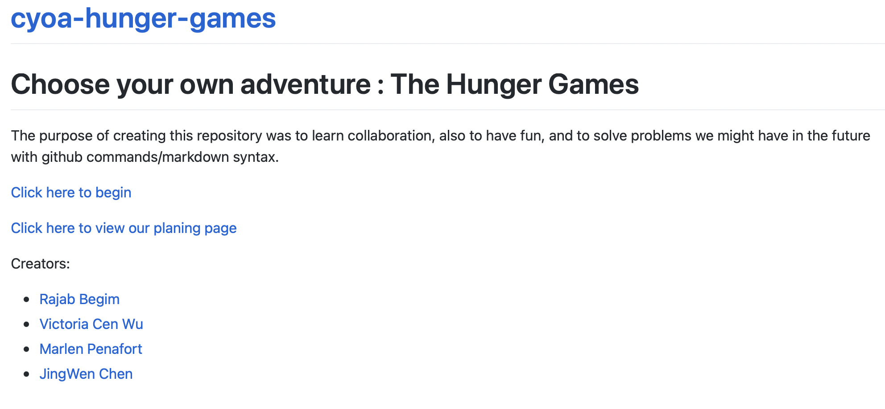

CYOA Hunger Games
My project is based on the movie/book The hunger games, it's an adventure where you have to make thoughtful decisions on choices given to win.
y projectCode of my project

Mr Mueller assigned this project so we can practice collaboration also to practice the new skills sets we learned. This project helped us to practice github merging better this time being that we are working with a partner. This project was also given so we can practice our commands like the command line, markdown, also our github commands. I think one of the main reasons for this project was to struggle or find a problem with ide or github that we would most likely face many times in the future of many projects and solve them or ask for help to learn the solutions. This also helped our communication skills as a group which led us to not have as much merge conflict.
There were many difficulties that my group and I faced. The most common ones were merge conflict, not understanding github errors, and communication about completion . Even though we had difficulties we overcame them with merge conflict we went on github to check who made the last command but eventually we made a google doc to time our recent pushs with our name so we can pull in those changes to not cause merge conflict. This helped us a lot to know where we were. With github error we reviewed notes, or asked one another if we didn’t understand at all. Lastly with communication about completion we struggled in the beginning to know who is doing what at what time but we fixed making this document the highlighted boxes might what has been completed, and what texts are inside the file.
If we had more time i would have tried doing html or just add images to my projects or maybe add more markdown to make my project stand out. What I would do differently is create better communication and a stronger plan where completion on who has completed what is viewable has a whole project. I would make communication better by asking my partner to have their notifications on so the important details are heard when needed to be. Also to create more meetings so we can work together to help each other completion the project faster.